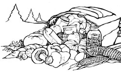
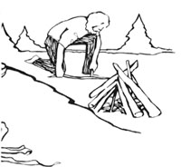

"Nothing helps scenery like ham and eggs."-Mark Twain
Although some of this author's suggestions may go "against the grain" of our more nutrition-conscious readers, his article contains information that should help anyone plan and prepare better and less expensive camp meals . . . even if Mr. Coburn does hint at a fondness for-heaven help us!-fruit-flavored "chocolate" chips.
The main thing I ask of trail food is that it taste good. I don't object to sound nutrition, but-after a day of hiking-flavor comes first. I'll admit I'm opinionated, but there's no room around my campfire for folks who think textured vegetable protein tastes "almost like beef," or that carob bears any more resemblance to Tobler's chocolate than I do to Burt Reynolds.
But personal preference aside, there are many factors that have to be taken into consideration when deciding which foods to pack along on a hike. In addition to palatability, you must think about heft and bulk, ease of preparation, and-the Big One-cost. In an effort to weigh all those variables and come up with the best backpacking meals for the least expense, let's begin by surveying the different products offered by the purveyors of specialty camp foods.
Freeze-dried foods-let's admit it-aren't all bad. Orange and grapefruit juice crystals, for example, are usually tastier than Tang. And some of these packaged dinners even taste sort of like food. Furthermore, there are times when freeze-dried meals offer some real advantages: For winter treks, preparation speed alone is reason enough to opt for this sort of grub; and on hikes lasting more than, say, ten nights, every ounce of weight you can save will likely be considered cheap at any price.
Of course, most of the average backpacker's outings don't last ten nights. And it's extravagant to eat expedition-style when the trip could be provisioned better, and less expensively, from your pantry and the supermarket.
Retort meals are a newer wrinkle. Initially developed for the long-distance outings of NASA astronauts, these meals are precooked main courses, sealed in foil pouches, that keep without refrigeration. To prepare a retort meal, you simply dunk the pouch(es) in boiling water for about five minutes. Retort food is easier to prepare, requires no utensils other than a spoon or fork (if you don't mind eating out of a pouch), has better texture, and retains more nutrients than freeze-dried food. On the other hand, it's heavier, and one portion isn't much of a feast for most outdoor appetites.
I've tried several offerings each from two of the leaders in the field-Kraft a la Carte and Yurika brands. Kraft's retort meals weigh in at a uniform 9.4 ounces, which includes a starch in a separate, water-permeable pouch (picture a big tea bag full of rice or noodles). They cost $2.07 at my neighborhood supermarket. Yurika's main dishes weigh 7.5 to 10 ounces each and cost $3.25 at my local camper's supply outlet.
Kraft's retort dishes not only are less expensive than Yurika's but, I think, are better seasoned, as well. They certainly have better texture. For example, the water chestnuts in Kraft's sweet-and-sour chicken have real crunch, while I can seldom tell where Yurika's vegetables end and the sauce begins.
Overall, then, I vote for Kraft over Yurika, for retort meals over freeze-dried . . . and for moving on to more tasteful subjects.
Let's review a hiker's typical eating day. Think of this as the outline you'll be filling in as you plan and shop for trail meals.
When a long hike is pending and you're eager to break camp and hit the trail, preparation and cleanup time usually limit breakfast options. For an appetizer there's dried fruit, dried fruit rehydrated overnight, or juice from crystals. For a main course you can choose either quick-cooking (or presoaked) hot cereal, cold cereal, or something from the granola-bar family. For a hot beverage you have about the same choices as at home.
On days to be spent in camp (or when short hikes permit late starts), there's time for slow-cooking cereals, pancakes, or biscuits. Since most hikers prefer death to powdered eggs, many take enough fresh eggs and bacon for the first few days.
There are two schools of thought concerning on-the-trail lunching: One school advocates nibbling off and on all day rather than eating a "real" lunch, while the other prefers taking a lunch break as well as nibbling off and on all day.
Most lunchers have yet to find anything better (or lighter) than no-cook meats such as salami and sardines complemented by cheese and crackers or bread-unless it's peanut butter and crackers. Popular luncheon desserts include nuts, candy, cookies, dried fruit, or gorp (trail mix). Beverages include water. For reasons that baffle culinary psychologists, most hikers tire less of these simple menus than of all camp dinners combined.
While some backpacking books advocate a soup lunch, I have rarely seen anyone preparing a cooked midday meal in summer. Doing so would just involve too much fuss. Winter is another story, though. Even folks who limit cross-country ski treks to one day find that midday soup (or at least a hot drink) is worth the trouble.
Most respectable camp dinners start with soup and end with a simple dessert and a beverage. The soup brightens spirits and holds starvation at bay while the main course is cooking. Soup also helps hikers replenish their body fluids-which is especially important in parts of the West, where the typically dry air evaporates body moisture rapidly.
Viewed broadly, main courses follow a single pattern: An expandable, fast-cooking starch is blended with (or served under) a mixture of meat and such enhancements as vegetables, sauces, spices, and toppings.
In fact, you can map out a main-course planner on one page. Split the sheet into three or four columns. Head one column "Starches" and another "Meats." Either lump the rest together as "Flavorings" or give "Vegetables" a separate column. If you can list ten items in each of three columns, you'll have 1,000 combinations, not counting those that use two foods from the same column. Of course, many of these wheel-of-fortune combos will be real gaggers (imagine fried-rice-style Rice-A-Roni with tuna and chili powder), but you'll also have hundreds of real possibilities.
Dinner desserts include the lunch varieties, plus instant puddings and other easily prepared sweets (such as no-bake cheesecake).
Notice that I've not presented any detailed menus, but only broad guidelines for getting better-and better-tasting-backpacking meals for your money. Along the same lines, I offer the following nine hints for planning better, cheaper trail meals.
Every outing presents its own culinary opportunities and limitations. Smart cooks plan precisely-day by day, meal by meal-for the trip at hand. So before you shop, ask yourself questions like these:
How many days? If several strong backs will be dividing the load for a weekend trip, you needn't worry much about weight. (You could probably haul cast-iron pots without undue strain.) On the other hand, on summer one-nighters I often go without a fire. I simply dine on no-cook foods and streamchilled beer, and wake myself up with a walk instead of caffeine.
Nutritional balance is important on long trips (you may even want to include vitamin pills). But for short outings, diet is a matter of choice; after all, you could survive three days on nothing but Fritos and water without seriously threatening your health-though I can't imagine anyone wanting to.
Unless every ounce counts, carry enough fresh foods for the first day or two on the trail. Frozen steaks will thaw as you hike. Carrots and other sturdy vegetables will keep fine for the second day's lunch. So will hard-boiled eggs. In your pack's cool center, leftover home-cooked meat should keep well for the second night's dinner. Tightly wrapped smoked ham should keep until the third night or longer.
Will you have lazy days in camp? Will you build fires? Foods that need lengthy soaking before or during cooking (beans, lentils, regular brown rice, etc.) are fine for in-camp days and wood fires-but they won't do for fast meals after hikes or for trips when you must carry and ration stove fuel.
Will you be cooking at high altitudes? If the answer is yes, then forget about dining on anything requiring beans, because the dried legumes simply won't rehydrate. The higher you climb, the more slowly all starches and cereals will cook. And because of the lower temperatures at high altitudes, cereals left to soak overnight may turn into whole-grain Popsicles-even in summer.
Will water be in short supply? If so, choose your dinner starches from among those that require little more liquid for cooking than the small amount they'll absorb. Forget pasta.
How about wild foods? If you're in an area that lends itself to foraging, a copy of Lee Peterson's A Field Guide to Edible Wild Plants (Houghton Mifflin Co., Boston, 1978) and a break-down spinning or fly rod can be worth three times their weight in processed and packaged meat and vegetables. Of course, don't ever eat a plant if you have the least doubt about its identity. (After a few seasons' worth of foraging experience, you'll probably have enough sure identifications locked in your head to make the book optional.)
A backpacking trip is the perfect time to make use of home-dried garden produce. De hydrated vegetables will glorify any trail dinner (most hikers come home craving green stuff). Hiking also presents a good opportunity to use such homemade treats as jerky, your pet granola mix, candies, and sturdy cookies. (A tip on packing homemade granola bars: Overbake them a little. Crispier bars are lighter and hold up better in jouncing packs.)
Be sure to prepare your own gorp; store blends always leave out at least one thing you love. But keep in mind that a trail mix you enjoy at home may be lousy for the trail: I like sunflower seeds, but I don't like the way they jiggle down to the bottom of the gorp bag during a hike.
And (again) remember that on short trips you can tote heavier food. I know a cook who is famed for her Spaghetti à la Backpack. Her sauce tastes home-canned . . . because it is. In camp, she produces it from the one Mason jar she totes along on each trip. (On other jaunts, the jar might hold a whole deboned chicken.)
There are two differences between the Mountain Macho Backpacker Blend-type soup mixes sold at camping-specialty outlets and Knorr-type supermarket soup mixes: [1] Knorr tastes better, and [2] Knorr is cheaper. Likewise, no Packer Cracker from the camping boutique is better than Triscuits. (IBM is said to be doing research to determine why Triscuits break so little when slept on.) And no designer-priced Camper Cookies are as tasty as plain-Jane Oreos . . . let alone Pepperidge Farm . . . let alone homemade.
And if circumstances demand that any meat you carry be freeze-dried, you can still save money by buying only the meat and adding your own starches and flavorings.
When Colin Fletcher ambled the length of Grand Canyon, each of his air-dropped food packets included one gourmet goody. Take a lesson from The Man Who Walked Through Time, and pamper your own wilderness stomach. Remember-almost anything short of caviar is a bargain when compared with freeze-dried grub.
To stave off culinary boredom, carry the best meat you can afford. If I know I'll have to lunch all week on salami, it will be the tastiest Italian variety I can find. And my cheese sure won't be processed American when it can be provolone or New York cheddar.
You can splurge on beverages and still not spend a lot. Instant tea doesn't belong in camp, because it tastes nasty; carrying your favorite bagged tea won't sprain your shoulders. Since brewed coffee is usually too much trouble, treat yourself to good instant coffee-your pet brand, a gourmet type you've been hankering to sample, or even one of the continental-style flavored coffee mixes.
And while you're blending your gorp, why not make it a gorp fit for royalty? (You never know whom you'll meet out there.) At home I eat peanuts When l'm making trail gorp, I buy cashews.
Before you hasten off to turn the hood grocery store into your safari supplier, two warnings are in order:
Read labels carefully. Be sure the cookie, time won't take more fuel than you can span And check those "just add" ingredients: Any thing that says "just add two eggs" is a bad ; bet if you're going to be five days from the nearest hen (unless you know for a fact that the eggs aren't essential). Brand difference, matter, too: Some brands of "quick" rice are quicker than others; some gingerbread mixes don't need an egg.
Perform your big experiments at home, not on the trail. Don't attempt your very first cake in a fireside reflector oven. Likewise, if you're a Mexican-food innocent, don't plan to have your first brush with jalapeno destiny halfway up Mt. Whitney.
Backpacking demands lightweight foods that taste good, keep without refrigeration, are quick and easy to prepare, and dirty a minimum of utensils. Consider only those realities, and forget any notions about "what backpackers eat."
It's all a matter of attitude. For instance, the person seeking trail food finds little good bread. So much of it is bulky, crushes easily, and goes stale fast. But the alert shopper heads for the delicous section and finds lots of cocktail ryes and firm, European-style pumpernickels. Such breads are ideal pack fare. But to even consider them, your mind's eye must be focused to see that "party food" can also be camp food.
Search the supermarket for light, quick-fix foods that keep well. Ask yourself how long each dairy product will hold up. Hard cheeses keep better than soft, but a wax coating or foil wrap matters more than the type of cheese. If you bake, try using powdered buttermilk.
What about condensed mincemeat for desserts? If you've got the space, how about popcorn balls? And remember that "chocolate" chips come in butterscotch, peanut butter, and fruit flavors, too.
Notice all the canned meats, gourmet varieties included. Summer sausage (often sold as "beef stick") keeps well. So does pepperoni, and a few ounces of it will ignite lots of spaghetti. Salami that's left over from lunch can also be used to add zest to pasta dishes.
After you've scoured the grocery, take your well-sharpened eyes to health food and gourmet stores, and even ethnic food shops. (One small-town-based backpack chef I know will endure a day in the Big City just to raid a certain Chinese market's treasury of dried mushrooms and seafoods.)
Finally, keep your eyes peeled. Wise old camp cooks are ever alert. Even when browsing through cheese catalogs for possible Christmas gifts, they pounce on anything that might jazz up next summer's camp cooking.
For the frequent packer, the discovery of one new starch is more blessed than three other finds. The pasta and rice, Hamburger Helper, and dried-potato sections are only the first places in the supermarket to look. Did you remember Japanese ramen and Chinese chow mein noodles? Quick-cooking barley?
A friend steered me to couscous-semolina wheat in granular pasta form. The Near East brand is ready to eat in five minutes. Look for it in the gourmet section. (And while you're there, look for spaetzle-little German noodles.)
Health food stores are laden with pastas and grains. I'm addicted to bulgur (parched cracked wheat); perhaps you feel the same about kasha (buckwheat groats) or millet.
For fun, see if you can find one starch that isn't in any obvious store section. (My friend with the Mason jar sometimes goes camping with Stove Top stuffing mix. Why didn't I think of that?)
Seasonings are the lightest trail foods and among the most versatile. A clever seasoner can overcome many of the pack kitchen's limitations. (For instance, when preparing soups, a few dried mushrooms and a sprinkle of marjoram can make quite a difference.)
Seasonings also include bacon bits and other salad toppings; poppy, sesame, and other seeds; flavored crumbs and croutons; bouillon cubes and soup mixes; and all those foil packets of sauce mixes, taco spices, marinades, and gravies.
Grated Parmesan (or Romano) cheese is a superb trail food. It travels perfectly for weeks and will drive the drab out of countless main courses and soups.
Another must-have seasoning is Squeeze Parkay (or a similar liquid margarine). Many main courses require some form of oil, and most can use a bit of a flavor boost, too.
Dessert? No one ever called instant chocolate pudding the high point of a gourmet meal, but it's better when you add malted milk powder or, perhaps, a little instant coffee.
Drinks? Try cinnamon or another sweet spice in tea, coffee, or cider mix. Take miniature marshmallows for cocoa.
Breakfast? If you've brought along instant oatmeal that's been "customized" and prepackaged with chopped dates, banana chips, raisins, brown sugar, and powdered milk, you'll have a cereal worth crawling out of the sleeping bag for.
When you select foods that will allow you to eat a whole dinner from a Sierra cup, you're making a sensible adjustment to camp dining. Keep looking around for other smart adaptations.
Try presoaking grains and hot cereals. For dinner, you needn't cook bulgur at all. Instead, make tabouli salad by mixing bulgur with dried vegetables and spices, pouring boiling water on top, and letting it sit for an hour.
Never reject a food idea because you won't be able to add some suggested frill, such as browning the dish on top after it's cooked. And unless the idea of pressing graham cracker crumbs into the bottom of your Sierra cup excites you, spread the crust mix over your no-bake cheesecake.
If you don't like messing with a reflector oven, keep in mind that many baked goods can be prepared pancake-style in a skillet. (So what if your gingerbread comes out looking weird? You want it to taste good, not to grace the cover of Bon Appetit.)
Show me folks who swear they eat better on the trail than at home, and I'll show you folks whose dinner invitations you'll want to decline. The cold reality of trail eating is that a camp stove is not a range, a backpack is not a refrigerator, and science has yet to find a way to dehydrate Caesar salad, leg of lamb, or bourbon on the rocks.
Nevertheless, by planning carefully and shopping creatively, you can make your camp meals more enjoyable to prepare and eat, you'll have extra traveling money jingling in your hiking shorts . . . and the camping boutiques and designer trail-food manufacturers will be left holding the foil bags.
|
 |
 |
|